十二個人，
一個決定
是什麼左右我們的思考？
思考素養（一）
今天的四段路
- 壹 真相難辨——理未易明，事未易察，善未易辨
- 貳 《十二怒漢》：十二個人，一個決定
- 參 換你當陪審員：小組討論
- 肆 從電影回到方法：什麼是思考素養？
理未易明，事未易察，善未易辨
看清真相，比想像難；是非難辨，根源在心。
思考的重要性
很多時候人有直覺的想法，但直覺不一定對，而就算對，人也不一定知道背後的所以然或能清楚加以表述。思考在這三方面都扮演重要的角色。
理未易明
事未易察
善未易辨
AI 也會「一本正經地說謊」
一位美國律師用 ChatGPT 協助撰狀，直接引用了判例「Royer v. Nelson」——法官查證後發現：這則判例根本不存在，只「存在於 ChatGPT 之中」。律師因此遭法院制裁。
AI 不會說「我不知道」；
查核責任，永遠在人。
當你們用 AI 寫報告，這正是你們每天要面對的現場。
- AI「幻覺」＝流暢、合理、卻與事實不符的內容。
- 它最危險之處：語氣自信，不會標示自己在猜。
- 愈像真的，愈需要查證的能力與習慣。
- 這已非個案：追蹤資料庫收錄的律師引用「AI 假判例」，截至 2026 年 5 月，美國逾千宗、全球約一千五百宗，且每週增加。
案例來源：衛報／美國猶他州上訴法院，2025。統計：AI Hallucination Cases 資料庫（D. Charlotin, HEC Paris）。
深偽（Deepfake）：連「刷臉」都能偽造
2026 年 2 月，刑事局偵結起訴：台灣的系統商替境外詐團，用低軌衛星（星鏈）連線＋AI 深偽合成被害人的臉，騙過中國「數字人民幣」App 的刷臉驗證、盜轉存款——55 名被害人全是中國民眾，財損約新臺幣 2 億元。這起案子裡，台灣是加害端。
辨不出來，才更要查證
- 別靠肉眼：16 種主流偵測器實測，沒有一種能可靠辨識真實世界的深偽
- 換管道確認：凡涉及金錢或身分驗證，先掛斷，用自己原有的號碼找本人
- 可疑就查證：165 反詐騙專線／全民防騙網
華視新聞、聯合報，2026/2（刑事局 2026/2 偵結起訴）；CSIRO×成均館大學（IEEE EuroS&P 2025）／警政署
台首例！詐團用「星鏈＋深偽技術」盜臉騙 2 億（華視新聞，2026/2/3）
在後真相與認知作戰的時代，思考素養比任何時代都更關鍵。
關西機場事件（2018）：真相，比口號複雜
2018 年燕子颱風，關西機場關閉。網路瘋傳「中國派車救台胞、須自稱中國人才能上車、駐處無能」。數日後，駐大阪辦事處處長蘇啟誠輕生。
流行的一句話
「中國假新聞，
逼死了台灣外交官。」
義憤填膺、簡單有力。但它其實有兩個斷言：① 假是誰造的，② 他為何被逼到絕境。
查證之後，兩個都只對一半——連「反假訊息」的敘事，也會被壓成口號。查核責任永遠在人，包括查核那些「替我們查核的人」。
查證後的發現
- ①「派車救台胞」確是假訊息——機場拒絕領事館派車，是不分國籍統一疏運
- ① 但成於島內：關鍵傷害是台灣媒體加料與網路放大——島內放大它的網軍，罵的是我方外交人員
- ② 監察院糾正的是外交部：事實未明就強令提「疏失檢討報告」，僅憑網路流言與一通無法確認的電話
- ② 家屬說他並非因假新聞而輕生，遺書也沒有提到假新聞的壓力
台灣事實查核中心／監察院 2019 糾正案／蘇啟誠家屬聲明（2018/12）
善，未必易辨——當「規矩」蓋過了「愛」
安息日，耶穌在會堂遇見一個手枯乾的人。旁邊虔誠守法的法利塞人緊盯著——不是關心病人，而是等著看耶穌敢不敢在安息日「工作」治病，好抓他的把柄。
「安息日許行善呢，或作惡呢？許救命呢，或害命呢？」他們一聲不響。思高本．馬爾谷福音 3:4
耶穌治好了那人。結局卻是——「法利塞人一出去，立刻便與黑落德黨人作陷害耶穌的商討，為除滅他。」（馬爾谷 3:6）
他們是當時最虔誠、最熟律法的一群人；卻因執著於規條、忘了律法背後的「愛」，把眼前行善救人看成了犯規作惡——善惡的判斷，被心裡的成見扭曲了。
最難查清的，往往不是外面的假訊息，而是自己心裡的執著與成見。
——而這，並不是宗教裡才有的事。
善，未必易辨——當「面子」蓋過了「救命」
1847 年維也納總醫院，產科分兩科：醫生接生的第一科，產婦死於產褥熱的比例長年是助產士那一科的數倍。二十九歲的助理醫師塞麥爾維斯發現，第一科的醫生常剛解剖完屍體就來查房，助產士則從不碰屍體；一位同事解剖時被刀劃傷，死狀與那些產婦一模一樣。他於是要求接生前先用漂白粉水洗手。
但醫界沒有接受：醫院拒絕與他續約，醫學期刊不再刊登他的文章，同行群起排斥。
1865 年，他被誘騙進精神病院，掙扎時遭守衛毆打；右手的傷口感染，兩週後死於敗血，得年四十七——正是他一生想阻止的那種感染。
同一間醫院、同一批醫生、同一群產婦——中間只多了一道洗手的程序。
他提出的不是理論，而是一組數據——不必同意他對病因的任何解釋，只要看數字。
1847 年維也納總醫院產科月別死亡率與生平，轉引自 Wikipedia〈Ignaz Semmelweis〉條；中文報導見中央社，2020.03.07。
明擺著的答案，為什麼看不見？
他們都看得懂統計。但沒有人去查那個數字，而是去查這個人，然後否定他。
數字對不對？
承認洗手有效，就等於承認：是自己的手，把病帶進產房的。
代價太大——大到心不允許理智，去看那個明擺著的答案。
心態的固著，讓專家對明擺在眼前的證據視而不見。
兩個故事，同一個結構：最虔誠的一群人，把安息日的救人看成犯規作惡；最專業的一群人，把洗手救命看成對同行的污衊。
錯不在信仰，也不在知識——是非難辨，根源在心。
由外而內：真相難辨的四道關
AI 生成不存在的判例——語氣自信，不會標示自己在猜。
深偽合成的臉騙過刷臉驗證——十六種主流偵測器都認不出來。
關西機場——連「反假訊息」的說法本身，也可能是被簡化過的版本。
安息日的規矩、維也納的面子——擋住判斷的不是資訊不足，是心裡的執著。
越往下越難查——因為要查的對象，就是查的人自己。
《十二怒漢》：十二個人，一個決定
一部電影，看盡人如何思考、又如何被自己絆住。
《十二怒漢》12 Angry Men（1957）
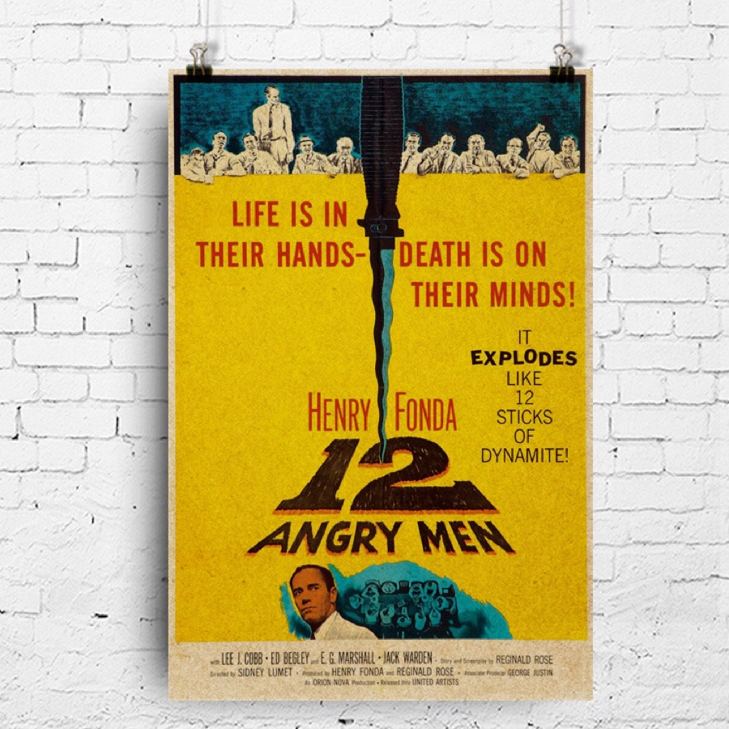
這部電影是你們的課前作業，各位課前已觀賞。
紐約貧民窟的一名十八歲少年被控深夜持彈簧刀刺死父親。檢方提出人證與物證，法庭初步認定這是一樁預謀殺人案。
依美國陪審制，少年是否有罪不是由法官一人說了算——十二位陪審員必須做出一致的決定。
Life is in their hands; death is on their minds!本片宣傳語。《12 Angry Men》（Sidney Lumet 執導，1957）
電影回顧：《十二怒漢》
《十二怒漢》劇情濃縮回顧（大象放映室，YouTube，自 00:46 起播）
檢方的三項證詞
證詞一：跛腳老人
住在樓下的跛腳老人自稱親耳聽到少年大叫「我要殺死你」，接著聽到死者倒地的聲音。他走到樓梯口，目睹少年跑下樓梯。
證詞二：對街婦女
對街大樓的婦女自稱親眼目睹少年一刀插入父親胸口。那一晚天氣太熱睡不著，她躺在床上，十二點十分透過穿越兩棟大樓之間、無乘客電車的倒數兩節車窗，瞥見少年高舉刀子刺下。
證詞三：商店老闆
商店老闆證實，案發當天少年到店裡買了一把「罕見的」彈簧刀，而插在死者身上的兇刀正是那種彈簧刀。
少年的抗辯
- 那天爸爸揍了他一頓。他跑出去跟朋友聊天，回家後又去看了一場電影。
- 半夜三點回到家門口，卻發現警察在現場等候，以及父親的屍體。他自稱沒有殺人。
- 他當天確實買了一把彈簧刀放在口袋裡，不料口袋有個破洞，刀掉了。
- 但他說不清楚那一晚所看電影的名稱、劇情與主要演員。
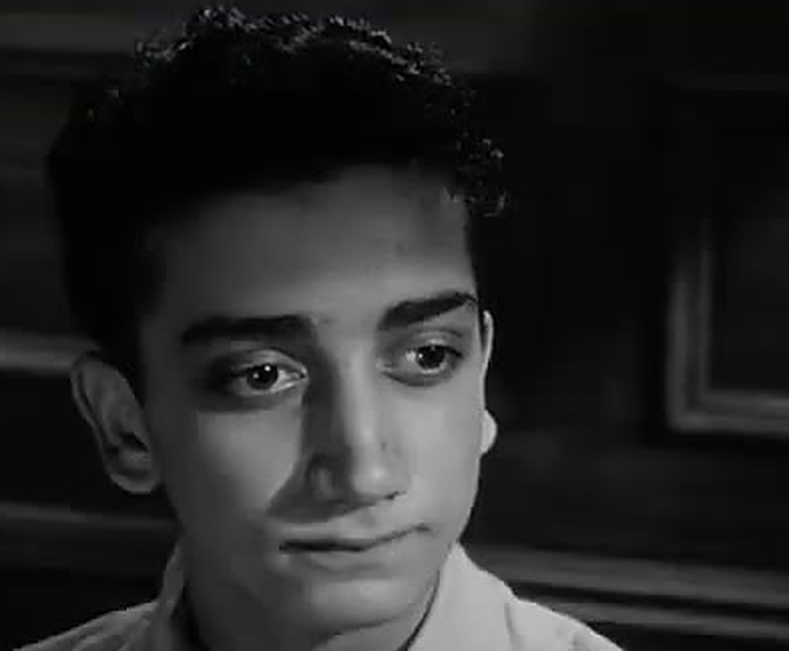
一個住在貧民窟的十八歲男孩
陪審員回顧
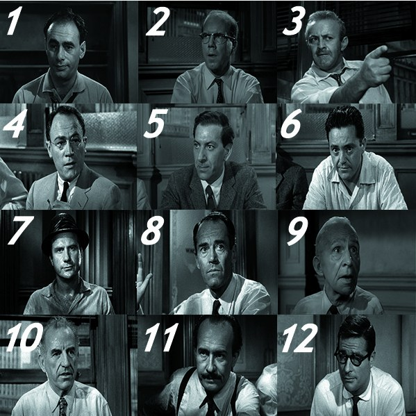
十二位素不相識的陪審員，背景、性格、立場各異。
他們必須關在同一個房間裡，透過討論做出一致的判決——接下來，我們逐一觀察他們如何思考。
十二位陪審員的角色
| 序號 | 角色與性格 | 改判無罪序 |
|---|---|---|
| 1 | 陪審團團長，中學美式足球教練。對眾人意見相當寬容 | 9 |
| 2 | 銀行員，膽怯而謙遜。一開始意見被他人左右，討論後逐漸有了自己的觀點 | 5 |
| 3 | 快遞公司老闆，傲慢咄咄逼人。與兒子不和，使他對弒父案懷有根深蒂固的成見 | 12 |
| 4 | 股票經紀人，理性冷靜，只依據有說服力的證據下判斷 | 11 |
| 5 | 貧民窟出身，依自身成長經驗理解案情 | 3 |
| 6 | 裝潢工人，個性強硬但尊重人 | 6 |
| 7 | 果醬銷售商、洋基隊球迷，急著散會去看球賽，對討論漫不經心且煩躁 | 7 |
| 8 | 建築師，首位懷疑男孩是否有罪並力排眾議者。片尾揭示其名「戴維斯」（Davis，意為達味之子） | 1 |
| 9 | 觀察力敏銳且富同理心的老年人。片尾揭示其名「麥卡德」（McCardle） | 2 |
| 10 | 修車廠業主，盛氣凌人且頑固偏執，喜歡大聲嚷嚷 | 10 |
| 11 | 歸化為美國籍的移民鐘錶匠，聰明而擅長分析 | 4 |
| 12 | 廣告企劃師，說話俏皮，漫不經心，三度改變投票決定 | 8 |
換你當陪審員：小組討論
輪到你了——如果你在那個房間，會怎麼判？
小組討論：三個問題
- 題一（第 1、2 組） 哪些因素影響陪審員的思考？
- 題二（第 3、4 組） 他們在思考時有哪些盲點？
- 題三（第 5、6 組） 又有哪些值得稱道與學習之處？
各組先在組內凝聚共識，掃碼送出；接著小組報告與綜合討論。
掃你們那一組的碼，送出討論共識
六組同時進行，各組由一位同學掃碼送出本組的討論精華。
各組的討論精華 第 1、2 組
各組的討論精華 第 3、4 組
各組的討論精華 第 5、6 組
陪審員的思考與論證目標：BRD 原則
- BRD（Beyond Reasonable Doubt）是刑事訴訟中，陪審團認定被告有罪時適用的證明標準。
- 只當控訴方的犯罪證據達到「無法合理懷疑」的程度，方可斷定被告有罪。
- 若不符合 BRD，則必須判定其無罪。
BRD 原則的論證邏輯
有罪判決 ＝ 排除合理懷疑
≠ 事實上有罪
無罪判決 ＝ 無法排除合理懷疑
≠ 事實上無罪
判決結果並非達到真相，而是確定合理懷疑可否排除——有可能冤枉好人，也有可能錯放罪犯。
無罪判決並非證明對方事實上沒犯罪，而是指出：現有支持有罪的證據無法排除合理懷疑。
不同角色的思考特質
第一次表決：十一比一。
以下依「支持無罪」的先後順序，從十二位中選五位，逐一檢視其思考特質。
8 號：最願意認真思考的人

知識／技能
- 他清楚知道，論證的目標是做出判決，而判決則應以 BRD 原則為標準來達成
- 他前後一致地以 BRD 原則為標準，檢視各項證詞，以及陪審團成員所提出來的不同論述與觀點
情意／態度
- 對涉及生死的決定慎重以對
- 同理少年處境
- 態度溫和尊重
後設思考
- 他並非萬能，不可能注意到所有細節，所以需要透過對話來拼湊完整圖像
- 他有「無知之知」，所以比較不會有太多思考上的盲點
對照之下，3 號與 7 號的舉證邏輯錯置
第一次表決時，僅 8 號（Davis）一人舉手主張無罪。
3 號與 7 號質疑 Davis：「你真的覺得他無罪嗎？」
然而，這個質疑有舉證邏輯錯置的問題——依 BRD 原則，8 號不必證明少年無罪，而是必須排除犯罪證據的合理懷疑。
11 號：在關鍵時刻站出來的人
知識／技能
- 聰明且擅長分析、整理筆記並提出自己的疑問
- 對少年為何返回現場提出自己的疑問，並認同有其他可能性，心中出現了合理的懷疑
情意／態度
- 被 7 號「從有罪轉為無罪」的無所謂態度激怒，正義凜然地質問：是不是在拿生命當兒戲？若主張有罪就要堅持下去；若主張無罪，也要知道自己為什麼這樣主張。7 號在他嚴厲的質問下無言以對
後設思考
- 在討論逐漸演變成人身攻擊時，他站出來提醒大家所擔負的責任——如此暢所欲言的民主形式正是這個國家強盛的原因
7 號：漫不經心、不願思考
知識／技能
- 對案件缺乏深入思考
情意／態度
- 把想看球賽的享樂利益置於判決之前，不在乎判決結果
- 討論過程漫不經心且煩躁：一開始投「有罪」是因為想趕去球賽，投「無罪」又是因為厭倦了討論——此態度讓 11 號非常反感
後設思考
- 為了盡快達成決議，突然反轉改為「無罪」，卻說不出讓人信服的理由——這不算是一種真正的思想轉折
- 他試著打開電扇，發現電扇開不了，就直覺地認為壞了——人很容易在未深究的情形下，就做簡單的歸因
10 號：當偏見取代了推理

知識／技能
- 頑固偏執與階級偏見，相當影響了他的思考；不過聽了 9 號與 4 號針對鼻旁眼鏡印子的討論，他最後仍對女證人的視力產生了疑慮
情意／態度
- 氣勢凌人且頑固偏執，喜歡大聲嚷嚷
- 最後發表的階級偏見言論引來了所有人的反感
後設思考
- 懷有階級偏見，沒有耐心聽大家討論；因偏見影響判斷，不重視推理過程
- 負面的情意態度與刻板印象，讓他的思考有很多武斷與偏見
3 號：最晚改變立場的人
情意／態度
- 討論時不自覺帶入個人經驗與偏見：因自身與兒子不和，對少年弒父案懷有深刻成見，多次自相矛盾發言，無法理性評估
- 討論中曾衝動地對 8 號說「我要殺了你！」——易情緒性發言
- 想到兒子就顯出憤恨與創傷，但把合照放在皮夾裡顯示他其實珍惜父子關係
後設思考
- 從他衝動撕照片的行為可以推想，父子衝突未必是兒子單方面造成，也可能因他的衝動傷害了兒子
- 意識到自己常有衝動發言與決定，最後冷靜下來做出「無罪」決定，是十二位陪審員中最後一位表示少年無罪的
電影小結：影響思考的因素
- 思考者的生命背景與經驗
- 思考者所處的外在情境
- 思考者的身心靈狀態
情意態度與思考盲點
- 個人生命背景：導致的成見與意識形態
- 目的與動機：不純正與匱乏
- 知性層面：舉證方向錯置
- 感性層面：漫不經心、心浮氣躁、從眾
- 對話層面：只有對立沒有對話，只有情緒沒有思考
- 靈性層面：苦毒、愛的匱乏、無明、冥頑不靈
對話中的情緒與思考盲點

3 號情緒失控，衝動對 8 號說出「我要殺了你」
只有對立，沒有對話
只有情緒，沒有思考
陪審員的表現值得稱道之處
- 個人生命背景：以自身經歷理解他人的處境，卻不讓它變成定見
- 目的與動機：在意判決公正，關心他人死生
- 知性層面：無罪推定、大膽假設小心求證、推理符合邏輯、BRD
- 感性層面：不受主觀情緒干擾、專注、耐煩
- 對話層面：道德勇氣、同理、對話的堅定與溫柔
- 靈性層面：支持上述各層面的自覺、反思與努力
從電影回到方法：什麼是思考素養？
電影散場，方法留下。
思考素養的三個面向
思考素養——探索生命學問不可或缺的方法與心法。
一 知識與技能
正確思考的原理與方法：邏輯、論證、謬誤的辨識，以及如何辨明事實。
二 情意與態度
覺察阻礙思考的態度（先入為主、爭輸贏、私欲），涵養有益思考的態度（客觀、開放、公正、勇氣）。
三 後設思考
對自己的思考進行思考——反思並調整自己的思考模式與習慣；認識影響自己思考的因素（世界觀、政治與文化認同、意識形態、偏見等）。
觀看《十二怒漢》，從而探究思考的內涵，正是在對思考進行後設思考。
思考需要練習與精進
思考本身也需要修正與學習——亦即透過後設思考，精進思考素養。
「思考素養」與「後設思考」相互為用、互為因果：人在思考特定議題的過程中進行後設思考，便有機會調整自己思考的情意與態度，磨練思考的知識與技能，從而涵泳與提升思考素養。
思考的目標
思考的對象與目標不同，要動用的知識、技能與策略也就不同。所以談思考素養，得先分清楚：我們究竟是為了什麼而思考。
一 辨明事實
問的是：這件事到底是不是真的？——科學能反覆實驗，提出理論來驗證事實；歷史事實則只發生過一次，而且也只能靠別人留下的紀錄來重現。
二 價值判斷
真假之外，還要問：這值不值得追求？該不該這樣做？——而要回答它，必須先弄清楚一個事實：人真正需要的是什麼。
三 司法判決
除了事實辨明與價值判斷（或法益衡量）外，司法判決必須在法律的框架下進行。
四 終極信念
還有一類問題：人從哪裡來、往哪裡去？生命有沒有意義？——無法用實驗或判決裁定，卻是每個人都在用一生回答的問題。
剛才陪審團要做的，正是第三種。前三者一層比一層複雜：後面的把前面的包進來，再加上新的一層；第四種，則把思考帶到最根本的問題上。
從蛛絲馬跡辨明事實
鑑定師從耳朵、指甲這種沒人注意的小地方，認出一幅畫的真假；心理醫師從幾個症狀，推出病人心裡出了什麼事；偵探從一枚腳印，追出兇手是誰——金茲堡指出，三者是同一種本事：手上只有幾條線索，卻要推出那件看不見、也無法重演的事。
檢察官與偵探
主動蒐證，重建一件無法重演的事。
歷史學家
只剩史料，而史料帶著書寫者的觀點。
自然科學家
可實驗、可重複；還要認出背後的原理。
數學家
很多定理都是先摸出規律，再回頭證明。畢氏定理就是這樣：先從一個個直角三角形（3-4-5、5-12-13……）看出規律，之後才有人證明它。
Carlo Ginzburg, "Clues: Roots of an Evidential Paradigm" (1979)
那，畢氏定理是怎麼證出來的？
四個一模一樣的直角三角形，排進同樣大的兩個正方形裡——剩下的空白必然一樣大。
把左圖寫成算式：大正方形 (a＋b)² ＝ 四個三角形（2ab）＋ 中間的 c²：
(a＋b)² ＝ 2ab ＋ c²
a² ＋ 2ab ＋ b² ＝ 2ab ＋ c²
a² ＋ b² ＝ c²
每一步都不能不同意——這就是證明：它不靠測量，也不靠實驗，而是靠數學的推算。
規律早見於巴比倫泥板 Plimpton 322（約西元前 1800 年），比畢達哥拉斯早一千多年，但當時沒有證明；最早的完整證明是歐幾里得《幾何原本》I.47（約西元前 300 年）。
價值判斷，也是在認出事實
- 價值指的是可欲求性。那麼，人究竟欲求什麼？——這本身是一個事實問題。
- 但欲求有表面的，也有比較深層的。有些事物滿足了表面的欲求，長遠而言卻是傷害人的。
- 人若有理性去思考，就會發現不該只追求表面的欲求滿足。
- 那要根據什麼思考？——根據更整體的人性事實。
所以價值判斷同樣是一種「認出事實」，只是它認的是關於人性的、整體而深層的事實。價值與事實，也不是截然二分的。
亞里斯多德早已區分「表面的善」與「真實的善」；當代如 Philippa Foot, Natural Goodness (2001)、Hilary Putnam, The Collapse of the Fact/Value Dichotomy (2002)。
事實與價值，都跟觀點密不可分
事實
有真假，原則上可以查證。
觀點
從某個位置看出去，才看見這個樣子。
價值
關於好壞對錯、值不值得追求。
事實自有它的樣子，但我們談得出來的每一個事實，都是從某個觀點被描述、被重構出來的。價值反映的是事實上的可欲求性，既然價值與事實無法截然二分，價值與觀點自然也分不開。
司法判決的複雜性：再從《十二怒漢》來看
檢方的說法
- 跛腳老人聽見少年大喊「我要殺死你」，並看見他跑下樓。
- 對街婦女親眼看見少年舉刀刺下。
- 兇刀正是少年當天買的那款罕見彈簧刀。
- 所以——少年殺了他的父親。
檢察官是提出解釋的人：從蛛絲馬跡推出一個說得通的解釋——「是少年做的」。
接下來要問的是：陪審團拿到這套說法之後，要做什麼？
陪審團是從 BRD 檢驗證據的人
把檢方那套說法拆開來看——他們端出來的那三件事，是真的嗎？就算三件事都是真的，就一定能斷定人是少年殺的嗎？
陪審團要問的不是「哪個解釋比較好」。就算「有罪」是最說得通的解釋，只要從證據看來，「被告沒做」仍是可能的，就表示有合理懷疑他是否犯罪的空間，就不能定罪。
「排除合理懷疑」不是求真的最高標準，而是「非做決定不可」下的一個價值選擇——寧可放過，不可錯殺。
BRD 的門檻：須於通常一般之人均不致有所懷疑，而得確信其為真實之程度者，始得據為有罪之認定（最高法院 76 年台上字第 4986 號裁判要旨）。
但，什麼才算「合理」的懷疑？
不是任何一絲疑慮都算數。
合理懷疑必須有根據——不是從證據來，就是來自控方拿不出證據。憑空想像、光說一句「也不是不可能」，都不算。
美國聯邦最高法院 Victor v. Nebraska, 511 U.S. 1 (1994) 認可的陪審團說明：合理懷疑是「真實而實質的懷疑」，必須有憑有據，不能只憑臆測。
司法判決為什麼最複雜？
判決不只要認定事實、衡量價值，還要在法律的框架裡做——這個框架，讓法庭探究真相的方式，從根本上不同於科學與歷史。
可否懸而未決
科學與歷史都可以懸而未決，以「暫時如此、隨時可修正」為常態；法庭不行——法律要求判決必須要作出，無論是受理或駁回、違法或合法、有罪或無罪。
可否人人提出
科學裡任何人都可以提出更好的解釋，推翻先前的理論模型；歷史研究也是如此。法庭卻不是這樣的開放競爭——法律把角色分派好了：檢察官「應」負舉證責任，被告只「得」提出對自己有利的證明，不是誰的說法比較好就贏。
舉證責任見刑事訴訟法第 161 條第 1 項、第 161 條之 1；無罪推定見第 154 條第 1 項。
如何辨明事實，
認出真相？
思考的知識與技能、情意與態度、後設思考
思考素養（二）
14:20–17:20 博雅 406
今天的六段路
- 壹 思考的知識與技能
- 貳 眼見為憑？——辨明事實有多難
- 參 歷史的真相：剪不斷，理還亂
- 肆 媒體與真相
- 伍 信仰與終極真相
- 陸 思考的情意、態度與後設思考
思考的知識與技能
正確思考的原理與方法：邏輯、論證與謬誤的辨識。
思考的知識與技能
基本邏輯
- 論證的有效與健全
- 揪出邏輯謬誤與認知偏誤
事實／觀點／價值
- 三者的界線並不如想像中分明
- 價值判斷與事實也並非截然二分
我們要用這些知識與技能來思考各種有關真相與生命的課題。
論證是什麼：從前提到結論
一個論證，就是一組前提加上一個結論。
例子一
- 前提一 這門課的期末考只考申論題。
- 前提二 我申論題一向寫不好。
- 結論 我這門課一定會被當。
例子二
- 前提一 所有人都會死。
- 前提二 蘇格拉底是人。
- 結論 蘇格拉底會死。
拆開之後才能問：
- 這些前提是真的嗎？
- 這些前提真的能導出這個結論嗎？
有效，不等於健全
有效（valid）
如果前提為真，結論就必然為真時，這樣的論證就是有效論證
健全（sound）
有效，而且前提全部為真。
所有健全的論證都是有效的，但並非所有有效的論證都健全。
推論有哪三種？
演繹
「人皆有死，蘇格拉底是人，所以蘇格拉底會死」——前提若為真，結論就沒有例外。數學與邏輯走的是這一條。
歸納
我們觀察過的人全都死了，由此推向「人皆有死」——這一步只能說「很可能」，推不出必然。民調與統計走的是這一條。
最佳解釋推論
「人必死」不只是歸納出來的結論，而是老化、無法自我修復所造成的必然結果。
充分、必要與充要條件
充分條件
「A 是 B 的充分條件」是指有 A 就一定有 B，寫成 A ⇒ B。「牠是狗」是「牠是動物」的充分條件，是狗就一定是動物。但反過來不成立，動物不一定是狗，也可能是貓。
必要條件
「A 是 B 的必要條件」是指沒有 A 就一定沒有 B，也就是有 B 就一定有 A，寫成 B ⇒ A。「牠是動物」是「牠是狗」的必要條件，不是動物就不可能是狗。但光是動物還不夠，貓也是動物。
充要條件
A ⇒ B 而且 B ⇒ A，兩者互為表裡，寫成 A ⇔ B。像「今天是星期日」與「明天是星期一」，有一個就一定有另一個。
日常生活裡面的因果，像下雨、地面濕，其實關係非常複雜，不會有這麼清楚的邏輯上的充分或必要關係。
投票，要滿足哪些條件？
法律規定如下
公民投票法第 7 條：「中華民國國民，除憲法另有規定外，年滿十八歲，未受監護宣告者，有公民投票權。」
憲法第 130 條：「中華民國國民年滿二十歲者，有依法選舉之權。」
小組討論
一、公民投票：投票的必要條件與充分條件各是什麼？年滿二十歲是否為必要條件？
二、公職人員選舉：投票的必要條件與充分條件各是什麼？年滿十八歲是否為必要條件？受監護宣告的人可以投票嗎？
一、公民投票
必要條件是中華民國國民、年滿十八歲、未受監護宣告，並在國內繼續居住六個月以上；充分條件是這四項全部具備。年滿二十歲既非必要條件，也非充分條件。
二、公職人員選舉
必要條件是中華民國國民、年滿二十歲，並在該選舉區繼續居住四個月以上；充分條件是這三項全部具備。年滿十八歲是必要條件，但不是充分條件。受監護宣告的人仍可投票，這一點與公民投票不同。
公民投票法第 7、8 條、憲法第 130 條、公職人員選舉罷免法第 14、15 條
努力與成功，是什麼關係？
- 努力是否是成功的充分條件？亦即是否只要努力就一定會成功？
- 努力是否是成功的必要條件？亦即是否不努力就一定不會成功？
- 如果兩者的答案都是否定的，努力還有什麼意義？
從經驗層面言，兩者的答案大概都是否定的
努力不是充分條件：方法、時機、運氣等，都是獲得成功的重要因素，光靠努力並不保證成功。努力是不是必要條件，要看成功怎麼定義：若指擁有財富，繼承財產並不需要努力；若指把小提琴拉好，沒有人不經練習就能做到。因此，探討努力是成功的什麼條件，應先說清楚成功指的是什麼。
努力改變的是成功的機率
其他條件相近時，努力會明顯提高成功的機率，但機率提高並不等於保證。而努力的意義，也不只是提高機率。運氣、家世、時代，都不是我們能決定的，努力卻是自己決定得了的；而且努力當中養成的品格與承受失敗的力量，本身就值得追求。談到這裡，已經不是條件關係，而是價值的問題。
常見的六種謬誤
以人廢言
不去反駁論點，改攻擊提出的人——10 號那段階級偏見的發言，引來了所有人的反感。
訴諸情感
用情緒取代理由——募款廣告放一段悲慘畫面，讓人不忍心拒絕；打動人的是情緒，不是該不該捐的理由。
稻草人謬誤
把對方的主張換成一個更容易反駁的版本，再去打那個版本——對方說「這份證據還不夠」，卻被說成「他認定被告無罪」。
滑坡論證
把一串未經證實的後果推到極端——「今天讓 AI 幫忙潤稿，明天就會整篇交給它寫，最後人類再也不會自己思考。」中間每一步都需要理由。
混淆因果
把先後當成因果，或把相關當成原因——電扇打不開，就認定它壞了。
以偏概全
證據不足，就從一兩個特例推論到全體——一兩個同學搗蛋，就認定全班都壞。
眼見為憑？
辨明事實有多難
看清真相比想像難。
眼見為憑？
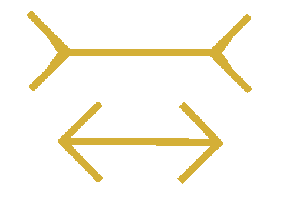
兩條線段其實一樣長（Müller-Lyer 錯覺）——按 → 顯示對照線
眼見不足以為憑！
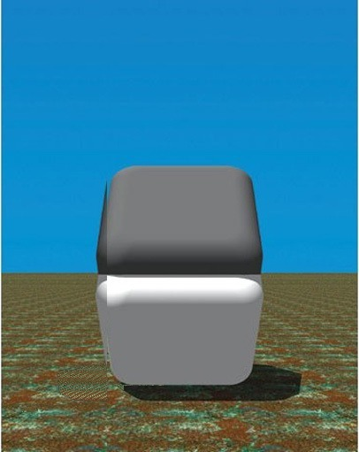
兩面主體灰階相同，差別只在交界處
真相需要摸索！
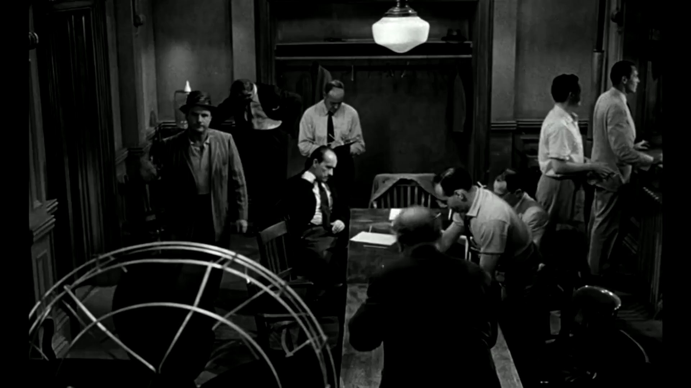
《十二怒漢》「電風扇」片段——7 號兩次打不開電扇，眾人想當然爾地認為電扇壞掉，直到後來才發現真正的原因是它與電燈開關連動，打開電燈後就能打開電扇。
人容易在未深究的情形下，
想當然爾地進行歸因。
什麼是真相？
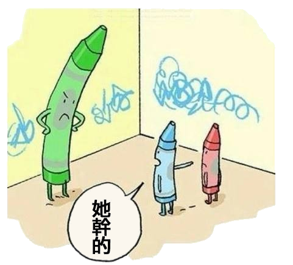
聽起來毫無說服力！
片面之詞不足為憑！
事實上，十分鐘前⋯⋯
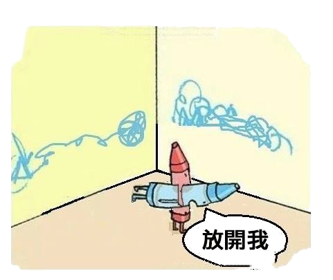
看起來「毫無說服力的辯解」，往往只是因為我們沒看到十分鐘前發生的事。
自我中心、觀點、認同與事實
- 日動 vs. 地動
- 地球 vs. 水球
- 中東 vs. 西亞近東、中東、遠東，都是以歐洲為原點的說法；從印度看，這一帶在西邊，所以印度外交部稱它「西亞」。
- 中國人 vs. 大陸人
歷史的真相：
剪不斷，理還亂
同一段過去，可能寫成兩本不同的「歷史」。
History ≠ Historiography
History｜歷史本身
history in and by itself
真正發生過的事。它已經發生、無法重來，也不因為誰怎麼說而改變。
Historiography｜歷史書寫
the writing of history
人對歷史所做的記述、揀選與詮釋。它總是出於某個人、站在某個位置、帶著某種關切。
就像你的一生與你的自傳——自傳再誠實，也不等於你的一生；而且誰來寫、為誰而寫，寫出來就不一樣。
我們能直接讀到的，永遠是後者；前者只能透過後者去逼近。
歷史二層面、三向度
History（歷史本身）
向度① 真實歷史事件錯綜複雜、各種力量交織、光怪陸離、難以盡道的面向。
Historiography（歷史書寫）
向度② 主導書寫的往往是政治權力與商業利益（成者為王，敗者為寇）。
向度③ 不同背景階層的人所體驗或接觸的面向（瞎子摸象）。
歷史的真相很有可能永遠無法復得，沒有人能掌握完整事實的所有面向，另外，也有可能被人刻意湮滅。
成者為王，敗者為寇：誰在寫歷史？
史達林（中）身旁的秘密警察首長葉若夫（右），1940 年被處決後，從照片裡消失了。
就在我們這個時代
2023 年起，俄羅斯高中新歷史課本把 2022 年出兵烏克蘭寫成「特別軍事行動」。主編梅金斯基說，課本要呈現「俄羅斯國家的觀點」。
連這句話都要查證
「歷史是由勝利者寫的」常被說成邱吉爾的名言，但找不到他說過這句話的紀錄。目前查得到最早的用例，是 19 世紀的法文與英文文獻。
照片：Wikimedia Commons（公有領域）；Euronews 2023.9.1；Meduza 2023.8.19；Slate 2019.11。
歷史真相？剪不斷，理還亂
- 中華人民共和國與中華民國
- 共匪？蔣匪？
- 何光滬〈貴陽的紀念塔，國人的歷史觀〉：一個地名還在，它紀念的是誰卻被抹去了
- 成者為王，敗者為寇？

同一段過去，兩本不同的「歷史」。
貴陽的「紀念塔」：地名還在，歷史去了哪裡？
- 「紀念塔」是貴陽的地名，也曾是實體的塔——國民革命軍第 102 師抗日陣亡將士紀念塔，1941 年落成，1952 年拆除，至今未復建。
- 何光滬說，今天的貴陽人「來往此地一千遍……根本不知道這個地名的來歷，竟然從來沒有想到要打聽打聽」。
- 他記下有人告訴他不能復建，是因為該師師長柏輝章同年被鎮壓處決。他於是問：「『敵人』？一個人？那麼，二萬人呢？」
- 全文結論：「國人的歷史觀，確實需要徹底的反思。」
何光滬〈貴陽的紀念塔，國人的歷史觀〉，愛思想網 2010-10-03。拆除原因官方作「道路拓寬」，何說屬有此一說、查無一手檔案；落成年份官方作 1941 年 5 月（何文作 1942 年 4 月），陣亡人數官方約 1 萬 2 千（何文作 2 萬餘）。
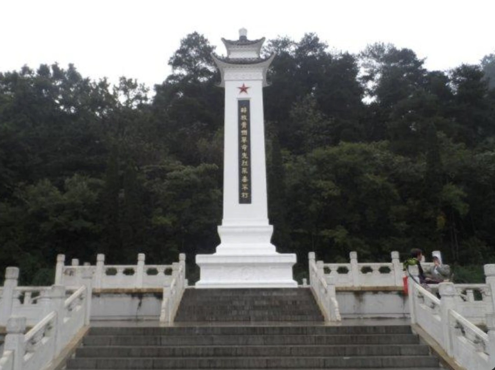
貴陽的「紀念塔」。
媒體與真相
今天的新聞，很快就成了明天的歷史。
媒體與真相
媒體知道如何利用真相的繁複，塑造出有利於它自身、或它想操弄的真相樣貌。
真相的剪接
《Points of View》廣告（The Guardian, 1986）——同一個事件的三種鏡頭
唐僧來台灣
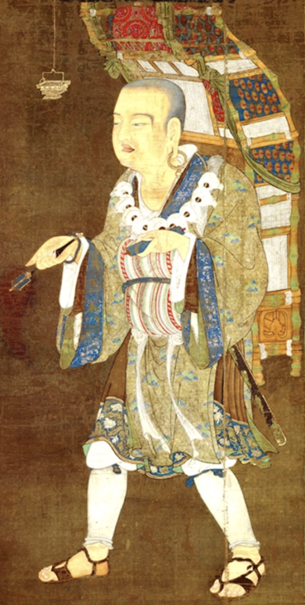

唐僧來台灣
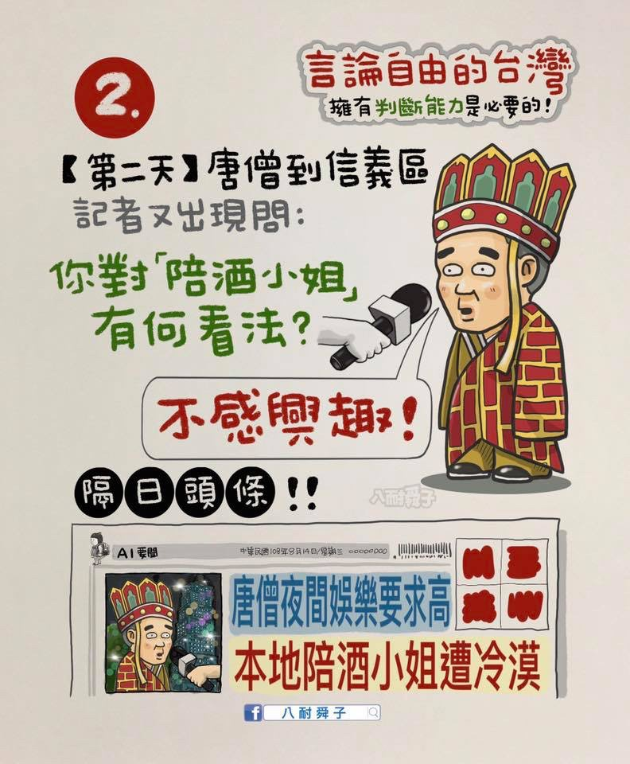
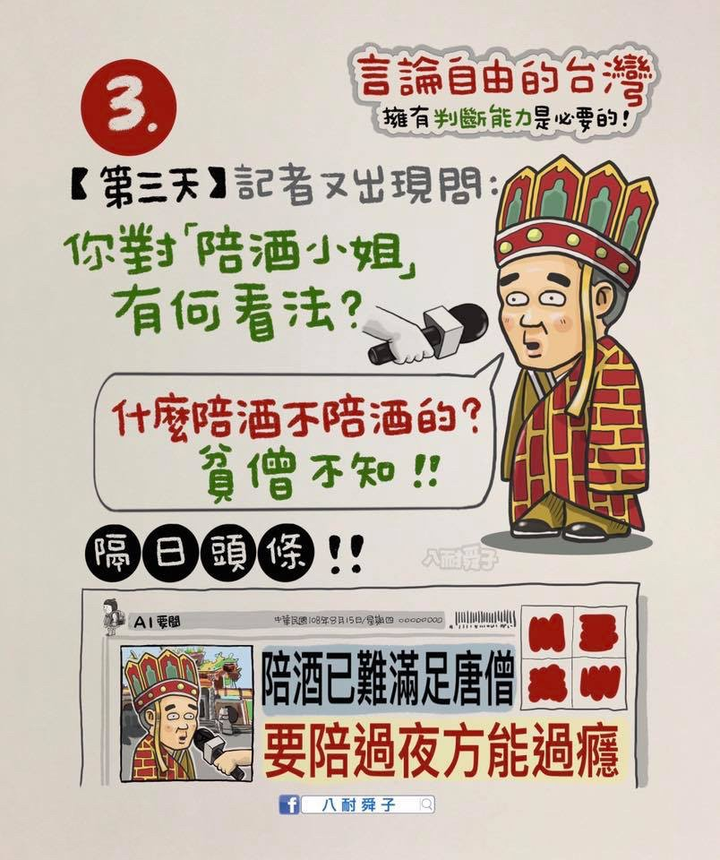
唐僧來台灣

唐僧來台灣
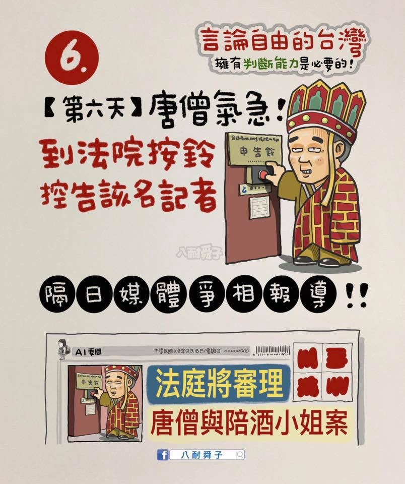

同一組素材，剪接順序不同，故事就完全不同——剪接可以製造「真相」。
真實案例：一個標題，如何製造真相
2014 食用油風暴，時任環保署長魏國彥被帶著趕赴臨時食安說明會——爬了八、九層樓，汗流浹背。
隔天，報導斗大黑字標題：
「環保署長汗顏」
汗流浹背（爬樓梯流汗）→ 下標成 汗顏（羞愧）。一個諧音，把「流汗」框成「羞恥」；只讀標題的人，情緒就先被帶走了。
剪接可以製造「真相」，
一個標題，也可以。
看到標題時，你會追問「真相是什麼」，還是直接收下它給你的情緒？
魏國彥〈我經歷的那一場食用油風暴〉，聯合報名人堂／聯合論壇，2026.07.16。
盡信媒體不如無媒體
盡信書不如無書；
盡信媒體不如無媒體。
你有看新聞的習慣嗎？
If you don't read the newspaper, you're uninformed. If you read the newspaper, you're mis-informed.常被歸於馬克·吐溫，但查無證據；華語圈的流傳，源自丹佐·華盛頓 2016 年受訪時的引用
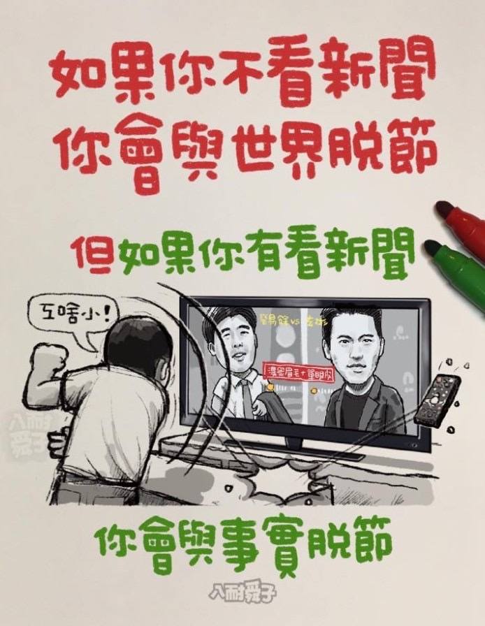
「如果你不看新聞，你會與世界脫節；但如果你有看新聞，你會與事實脫節。」
插畫：八耐舜子（作者自註「手抄自丹佐·華盛頓名言」，2020）
美國與伊朗：兩套說法，你常聽到的是哪一套？
兩國敵對將近半世紀：1953 年美英策動政變推翻伊朗總理摩薩台，1979 年伊斯蘭革命與美國大使館人質事件，2018 年美國退出伊核協議，2020 年美軍擊殺伊朗將領蘇雷曼尼，2025 年美軍轟炸伊朗核設施。
伊朗總統裴澤斯基安（中天新聞，9/23）
美國總統川普（C-SPAN，9/22；中文字幕自譯）
美國稱伊朗是「頭號恐怖主義支持者」；伊朗則說，美以聯手在德黑蘭炸死最高領袖哈米尼，還在他們的首都暗殺哈瑪斯領袖哈尼亞，「培養恐怖分子的人，卻說我們是恐怖分子」。誰是恐怖分子？你判斷的標準是什麼？
信仰與終極真相
證明不了的事，還能不能合理地相信？
連「凡人皆有死」都無法用邏輯證明
演繹推不出來
如果有不死之人存在，「凡人皆有死」就是錯的。
反過來說，「凡人皆有死」若是對的，就不可能有不死之人。
但要證明不死之人絕對不可能存在，是不可能的，所以無法證明「凡人皆有死」。
歸納也推不出來
過去的人都死了，不能保證將來的人也都會死。
但接受「凡人皆有死」，仍然是合理的。
確信從哪裡來？
你相信朋友值得信任、相信父母愛你——靠的不是一條證明，而是許多線索累積起來的整體判斷。
紐曼的回答
確信來自「一群彼此呼應、指向同一方向的或然性」。每一條線索單獨都不夠，合在一起卻可以讓人確信。
確信 ≠ 確定性
「確信」是人心裡的狀態，「確定性」是命題本身的性質。線索不必達到邏輯上的確定性，也能讓人產生確信。
John Henry Newman, Apologia Pro Vita Sua (1864)，第一章。
宗教靈異現象與思考
舍利子：一場「查核反轉」案例
- 舍利子哪來？醫學角度並未有明確定論——肝膽結石？骨骼內礦物質再結晶？
- 2023 年星雲大師荼毘後，佛光山公布靈骨舍利子照片；網路粉專隨即指控照片「盜用淘寶賣場圖」，並附上幾乎一致的賣場截圖，各方隨即大量轉發。
- 台灣事實查核中心查證：佛光山原始照片為連續拍攝、時地明確；那張「賣場截圖」反而查無實際賣場，且是盜用《人間福報》照片合成而成——「盜圖指控」本身才是假訊息。
- 這起事件恰好示範了思考素養的核心：查核要看證據（原始檔、拍攝時地、賣場是否存在），不能只憑「兩張圖很像」就下結論。
鏡週刊：〈網譏「星雲舍利子盜淘寶圖」查核為假〉
媽祖的靈異傳說
- 北港朝天宮「媽祖破案」——相傳的靈異傳說，報紙曾有報導。
- 白沙屯媽祖進香途經童綜合醫院，神轎在玻璃前搖擺不去；信眾事後詮釋為：媽祖是要提醒院方匾額掛錯位置。
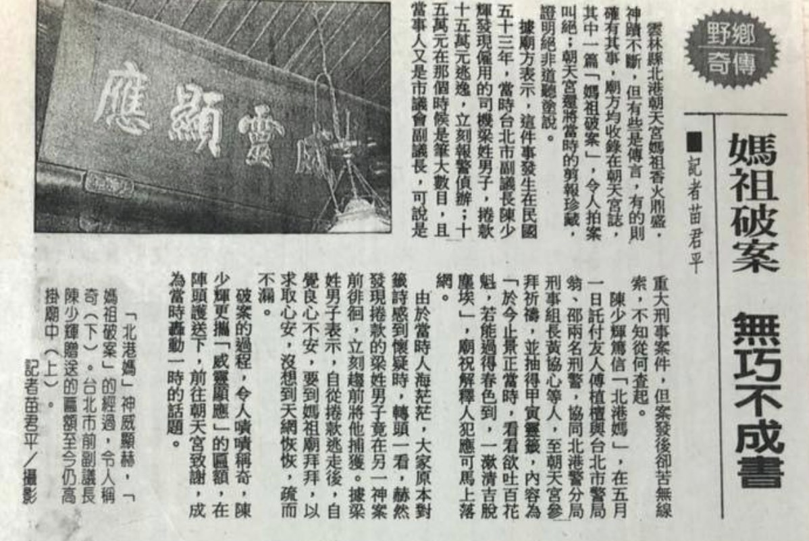
媽祖破案？北港朝天宮的靈異傳說（點圖放大閱讀）。
白沙屯媽祖網路電視台：〈媽祖婆一直敲玻璃...原來是要跟童綜合總院長說這件事〉
神轎搖擺、匾額掛錯，這兩件事都看得到。「媽祖是在提醒院方」則是把兩者連起來的解釋。你要看到什麼，才會覺得這個解釋成立？
借屍還魂？雲林麥寮的朱秀華事件
她說
1959 年，麥寮婦人林罔腰昏迷後醒來，自稱是金門 17 歲少女朱秀華：八二三砲戰時搭船逃離金門，漂到台西外海，被漁民劫走金飾、推下海淹死。
家人說她原本不識字、只說臺語，醒來後卻會說國語、識字，臺語還帶金門腔。
查證
1959 年：丈夫託人到金門，查到警察局確有一位工友叫朱清，和她說的父親同名。
1961 年：前金門縣府秘書長說，朱清的妻子叫「日春」，不是她說的「蔡蕊」；而且砲戰之後，朱清還住在金門。
朱秀華本人是否存在、是否遇難，沒有留下查證紀錄。
哪些說中了、哪些對不上？要有什麼樣的證據，你才會相信這是借屍還魂？
整理自維基百科〈朱秀華事件〉（轉引《今日佛教》第 54 期，1961；《徵信新聞報》，1962.3.17）；聯合報，2018.6.11。
宗教裡的三種話
談到宗教，常有三種不同的話混在一起：
① 經驗主張
例：「這張舍利子照片是盜圖。」
可以查證：原始檔、拍攝時地、賣場存不存在。
② 對經驗的詮釋
例：「神轎停在醫院玻璃前，是媽祖在提醒匾額掛錯。」
事件可以查；詮釋還要問：有沒有別的解釋？
③ 終極信念
例：「有神。」「生命不會歸於虛無。」
無法用實驗或判決裁定，卻是每個人都在用一生回答的問題。
很多爭論，其實是把這三種話混為一談。
不信，也需要理由
「無法用經驗檢驗的話，沒有意義」
1930 年代的邏輯實證論這樣主張，連「有神」「沒有神」都算沒有意義。但這句話本身，也無法用經驗檢驗。代表人物 Ayer 晚年受訪承認：驗證原則「從來沒能被恰當地寫出來……不是放進來的太少，就是太多」。
「開放心態量表」的盲點
題目寫「信念應隨新證據修正」，信教的人讀成自己的信仰，就被算成比較封閉。作者改寫題目實驗：寫明「宗教信念」時，與信教程度的相關是 −0.60；換成「對資本主義的看法」，只剩 −0.27。他們承認，原因是實驗室成員壓倒性地不信教。
信與不信，都得接受同一把尺的檢驗。
A. J. Ayer 受訪，BBC《Men of Ideas》〈Logical Positivism and Its Legacy〉（1978）；K. E. Stanovich & M. E. Toplak, Cognition 187 (2019): 156–166。
思考素養在這裡能做什麼？
- 分清楚是哪一種話：經驗主張、詮釋，還是終極信念。
- 經驗主張照樣查證——查證不是反對信仰。
- 用整體判斷檢驗終極信念：能不能解釋更多經驗？有沒有更好的解釋？有沒有被忽略的反例？
- 分辨確信與固執：願意面對反證，了解對方最強的理由。
信仰與理性像兩隻翅膀，使人精神飛揚，瞻仰真理。——若望保祿二世《信仰與理性》通諭（台灣地區主教團譯）
終極事實的真相？
- 人死如燈滅 vs. 死後生命
- 末世 vs. 來世
- 創造 vs. 演化
- 虛無 vs. 生命有意義
終極事實不能被證明，不是什麼奇怪的事——它跟「太陽明天會升起」處在同一個處境裡。
但這不是放行牌：進到這個場域，就得接受這個場域的檢核——有沒有更好的競爭解釋？有沒有被忽略的反證？
這些「終極事實」的真相，正是第七、八週〈終極關懷〉要我們用一生去摸索的問題。
思考的情意、態度
與後設思考
工具之外，是一顆願意誠實面對自己、追求真理的心。
思考的偵察兵：士兵心態 vs 偵察兵心態
Julia Galef，〈Why you think you're right—even if you're wrong〉（TEDxPSU, 2016）；本片為五段精華剪輯（5:08），繁體中文字幕為本課自製。士兵心態：把異見當敵人，目的是守住立場、打贏；偵察兵心態：把探索當畫地圖，目的是求真、樂於修正自己。
影片精華：士兵心態與偵察兵心態
士兵心態
- 想讓自己的想法打贏。
- 支持自己的資訊是盟友，不利的資訊是敵人，想把它擊落。
- 出自防衛心與敵我意識。
偵察兵心態
- 想看清那裡真正有什麼。
- 就算結果不好看、不方便、不愉快，也要誠實、準確。
- 出自好奇與求真。
他和同袍一樣認定德雷弗斯有罪，也一樣帶著反猶偏見。但發現新證據後，他想找出真相的動力壓過了偏見——花了十年、自己也坐過牢，才替德雷弗斯洗刷冤屈。
影片精華：偵察兵是怎麼養成的？
好奇
學到新資訊會高興；遇到和預期不同的事，覺得有意思。
看重檢驗
認為檢驗自己的信念是美德；改變想法不代表軟弱。
自我價值不綁在對錯上
「看來我可能錯了。這不代表我很壞，或是我很笨。」
你最渴望的，是捍衛自己原有的信念？還是盡你所能，把這個世界看得清清楚楚？——Julia Galef
接下來，用一個會牽動政治認同的議題，看看自己比較像士兵，還是偵察兵。
先投票：你怎麼看？
2025 年 12 月起，行政院院長對立法院三讀通過的多項法律不副署，法律因此無法公布。
① 你的政治傾向
比較傾向藍或白／比較傾向綠／沒有特定傾向或不知道
② 你認為不副署違憲嗎？
違憲／不違憲／還不確定
不記名，沒有人會知道是誰投的。憑你現在的直覺作答即可。
不同傾向的同學，怎麼看不副署？
行政院院長不副署：先把事實弄清楚
發生了什麼
114/12/15，行政院院長卓榮泰對立法院三讀的《財政收支劃分法》拒絕副署——行憲以來首次。該法至今未公布、未生效。
到今天累計幾件
八案未公布（立法院議事系統的狀態欄逐案標記「不副署未公布」）。媒體多半只列七案，漏了《廣播電視法》。
憲法怎麼寫
第 37 條只說總統公布法律「須經行政院院長之副署」——沒有任何條文規定「應」副署，也沒寫拒絕時怎麼辦。
還有一個規律
八案的不副署日，全部落在憲法第 72 條「總統應於收到後十日內公布」的最後一天。
憲法法庭至今沒有任何關於副署的判決；立法院提的總統彈劾案未通過；不信任案（倒閣）無人提出。
憲法第 37、72 條與增修條文第 3 條第 2 項；行政院 114.12.15 新聞稿；立法院議事暨公報資訊網各案狀態欄；全國法規資料庫各法沿革。
換你來判：不副署，違憲嗎？
行政院院長對立法院三讀通過的法律不副署，違憲還是不違憲？你們的理由是什麼？
討論時也留意：你的判斷，有多少是依據憲法條文與論證，有多少是受到自己的政治傾向影響？凝聚成幾句話的共識，再掃碼送出。
掃你們那一組的碼，送出討論共識
五組同一題，各組由一位同學掃碼送出本組的討論精華。
各組的討論精華 不副署｜第 1、2、3 組
各組的討論精華 不副署｜第 4、5 組
判斷違不違憲，要先回答的幾個問題
- 副署是權力，還是義務？憲法第 37 條說公布法律「須經」院長副署。這是讓院長為法律負責、因此可以拒絕的權力，還是只是一道必須完成的程序？
- 總統的義務怎麼辦？第 72 條說總統「應於收到後十日內公布」。院長不副署，總統就公布不了——兩條條文要怎麼一起讀？
- 憲法有沒有另外的路？行政院不同意法律時，憲法設計了覆議；立法院不滿行政院，可以倒閣；雙方爭議，可以聲請憲法法庭。不副署是在這些程序之外，還是之內？
每一個問題，都要先把條文讀清楚，再檢查自己的推論——而不是先有答案，再找理由。
《中華民國憲法》第 37、72 條；增修條文第 3 條第 2 項；《憲法訴訟法》。
聽完討論與講解，再投一次
① 你的政治傾向
比較傾向藍或白／比較傾向綠／沒有特定傾向或不知道
② 你現在認為不副署違憲嗎？
違憲／不違憲／還不確定
一樣不記名。看法變了或沒變都可以，照你現在的判斷作答。
投票前後，看法有沒有改變？
一個議題，考到思考素養的三個面向
知識與技能
讀懂憲法條文與權力分立的設計；檢查論證的前提是不是真的、推論是不是成立。
情意與態度
政治認同會不會先替你決定答案？遇到不利自己立場的理由，你是想擊落它，還是想看清它？
後設思考
比較自己投票前後的判斷：它是怎麼形成的？哪些因素在影響你？
立場不必中立，態度必須公正
立場不必中立
- 沒有立場，往往只是鄉愿或「西瓜偎大邊」。
- 應採取當下所能達到、最接近真理的立場，並以道德勇氣擇善固執。
態度必須公正
- 對自己：不偏袒己見，向新證據開放，願意重構想法。
- 對他人：不誇大對方缺失，不忽略對方最強的論據。
不同立場的人若能同理對話、修正彼此，將能一起趨近更完整的真理。
心法：子絕四
毋意
不憑空臆測
毋必
不武斷絕對
毋固
不固執己見
毋我
不自以為是
子絕四：毋意，毋必，毋固，毋我。——《論語·子罕》
這正是「偵察兵心態」的東方版：追求真相，勝過捍衛自我。
什麼是後設思考？
後設思考，就是對自己的思考進行思考。
反思與調整
察覺自己怎麼想、為什麼這樣想，並加以調整。
認識影響自己的因素
世界觀、政治與文化認同、意識形態、偏見。
剛才投票前後的自己，就是很好的練習材料。
洗腦與真相：《另類數學》
《Alternative Math》短片（Ideaman Studios, 2017）——一場「2＋2 等於幾」的荒謬爭議
後設思考：現場書寫練習
回顧本週你下過的某一次判斷（對人、對議題、對自己皆可）——
- ① 當時我的預設是什麼？
- ② 有哪些情緒或偏見摻了進來？
- ③ 哪些事實我其實沒掌握？
- ④ 如果重來，我會怎麼想？
3–4 人一組互讀、彼此提問——讓「對思考的思考」，從抽象概念變成你帶得走的技能。
思考中的靈性修養：知性與感性
思考中的知性
人要進行好的思考，必須在知性層次想清楚思考的目標、學習思考的知識與方法、練習思考的技能。
——但，是什麼支持人這麼做？
思考的感性
思考的情意與態度就是思考感性的部分。感性引導知性：認清思考的目標、掌握思考的知識與方法，也賦予人練習思考技能的動機。
——但，是什麼能幫助人調整情意與態度？
知性與感性，以靈性修養為基礎
- 人熱愛真理、渴望追求真相的動機是什麼？可能是知識的好奇，也可能是更高的動機——例如敬畏真理、愛人如己。
- 若沒有更高的動機，真理與真相可能都抵不過經濟利益，或社會與政治的壓力。
- 練習需要持之以恆的靈性堅持，也需要每個當下的警醒。
- 情意與態度的涵泳，需要時時對起心動念的察覺——這一切都涉及第十二、十三週談的靈性修養。
思考素養：貫穿五大素養的「方法」
W1 思想史比較
卡繆、康德、托爾斯泰、高更——本身就是思考素養的訓練。
W5–6 人學探索
以思考素養為方法，追問「人是什麼」。
W7–8 終極關懷
死亡是牆還是門？需要辨明與思辨。
W9–11 價值思辨
思考素養的直接應用。
W12–13 靈性修養
與後設思考、內在覺察密切相關。
思考素養
不是第六個並列素養，而是貫穿全部的方法。
思考素養與生命教育
思考素養不只是生命教育的一項核心素養，更是學習其他一切素養時不可或缺的方法。它幫助我們面對生活中的問題與挑戰，也是養成另外四項素養的共同要件。
以理性的批判、靈性的覺察，
以追求智慧的態度從事思考。
下週見：課前作業③
W5（10/7）進入人學探索——人、禽獸與 AI，差在哪裡？
「人與動物到底差在哪裡？」先自己列出五點；
並就「我是誰」寫下二十個回答。
靈修週記②於 10/13（二）12:00 前繳交，請持續留意每天「境界現前」的時刻。